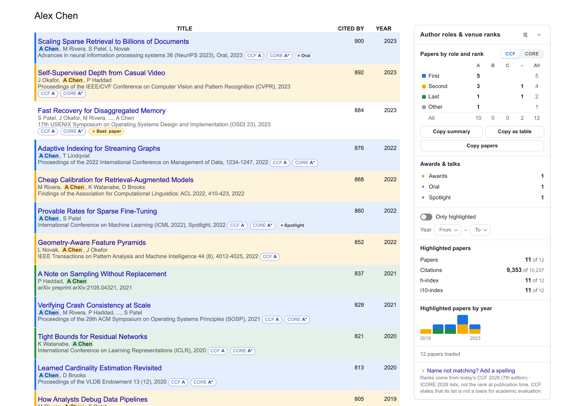
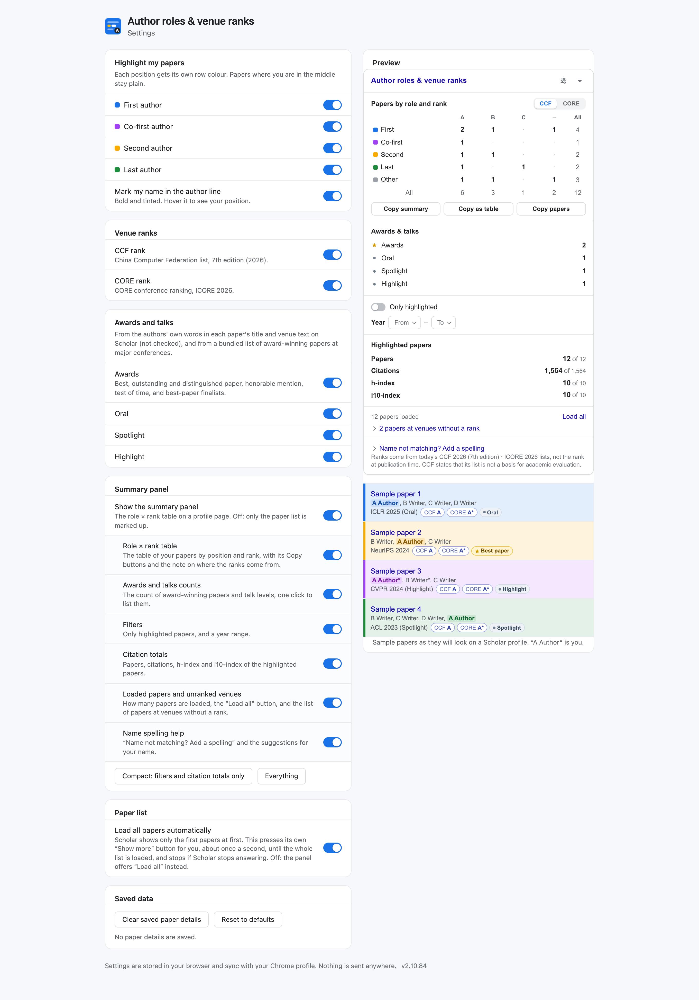

Jede Publikation, eingefärbt nach Ihrer Rolle
Zeilen für Erstautor, Co-Erstautor, Zweitautor und Letztautor erhalten je eine Farbe, und Ihr Name wird in der Autorenzeile markiert.
Eine Chrome-Erweiterung für Google-Scholar-Profile. Sie markiert Ihre Autorenrolle und den CCF- / CORE-Rang des Publikationsorts bei jeder Arbeit und fasst das Ergebnis in einer Tabelle zusammen: „4 CCF-A-Artikel als Erstautor“.
Installieren Auf GitHub ansehen
Kostenlos und Open Source · Chrome und andere Chromium-Browser · 30 Sprachen

Schalten Sie die Rollen ein und aus: Das Beispielprofil folgt dabei, wie auf der echten Seite.
Hervorgehobene Paper: 6
| Role | A | B | C | None |
|---|---|---|---|---|
| First | 2 | 0 | 0 | 0 |
| Co-1st | 1 | 0 | 0 | 0 |
| Second | 0 | 0 | 0 | 1 |
| Last | 1 | 0 | 0 | 1 |
Instant, compile-ready publication formats for CVs, grant applications, research agents, and spreadsheets.
Press / anywhere on Google Scholar to power through large publication corpora.
>100 >=50 <10Citation Thresholds
Filter papers having citations above or below any threshold number.
ccf:a ccf:b core:a*Venue Ranking Tiers
Isolate publications in top CCF or CORE ranked conferences and journals.
role:first role:last r:cofirstAuthorship Roles
Filter by student first author, co-first, second, or senior last author.
>2020 year:>=2021Publication Year Ranges
Filter papers published after, before, or within specific years.
has:award has:talkHonors & Presentations
Isolate Best Paper, Test of Time, Oral, Spotlight, or Highlight works.
One-Key Reset
Instantly clears all active search queries, matrix filters, and metric selections.

Zeilen für Erstautor, Co-Erstautor, Zweitautor und Letztautor erhalten je eine Farbe, und Ihr Name wird in der Autorenzeile markiert.
Der CCF-2026- und der ICORE-2026-Rang stehen neben jedem Publikationsort, zusammen mit der Regel, die ihn zugeordnet hat. Ein nicht zuordenbarer Ort bleibt unmarkiert: niemals eine Vermutung.
Wählen Sie eine Zelle, um nur diese Arbeiten aufzulisten, und kopieren Sie die Zusammenfassung oder die Liste für einen Lebenslauf oder einen Förderantrag.
Best-Paper-Preise, Test-of-Time-Auszeichnungen sowie Oral, Spotlight und Highlight, aus den eigenen Angaben der Autoren und den offiziellen Preisseiten von über 7.000 Arbeiten.
Scholar blendet die letzten Autoren langer Listen aus. Ein Klick liest sie von der Seite der Arbeit, oder von Semantic Scholar, wenn Sie das erlauben.
Wenn Sie es aktivieren, werden Einträge, die dieselbe Arbeit zweimal aufführen, zu einem zusammengefasst, und die Zitationen werden addiert.
Wählen Sie, was angezeigt wird, legen Sie Ihre eigenen Farben fest und blenden Sie die Teile der Scholar-Seite aus, die Sie nicht brauchen.
Kein Konto, keine Analyse, kein Tracking. Alles wird in Ihrem Browser berechnet, und die Ranglisten sind in der Erweiterung enthalten.
chrome://extensions und aktivieren Sie den Entwicklermodus.Ein Eintrag im Chrome Web Store könnte folgen. Edge, Brave und andere Chromium-Browser funktionieren genauso.
Die Ränge sind die heutigen Listen, nicht der Rang zum Zeitpunkt der Veröffentlichung, und die CCF-Liste selbst erklärt, dass sie keine Bewertung ist. Die Erweiterung errät nie einen Publikationsort: Was sie nicht einordnen kann, wird aufgelistet, aber nicht markiert.